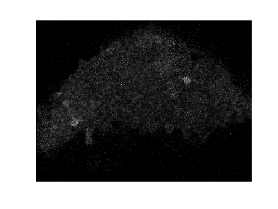
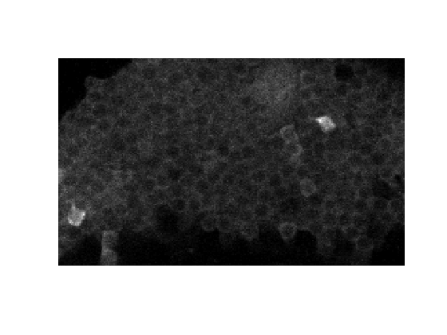

Importing Data
Data can be imported from a range of different software platforms. Currently there are import functions available for PrairieView, FluoView, and ScanImage. It is easy to add your own import routine. So long as it produces a data structure in the correct format, all subsequent analysis functions will work. The script twoPImportBatch will import and pre-process all PraireView data directories in a specified path. It can readily be modified to process files from other acquisition programs. twoPImportBatch simply calls a bunch of import and pre-processing routines in the correct order. It's a good idea for you to know what those routines are doing. Therefore, this user guide goes through everything step by step.
Contents
Manually Importing PrairieView Data
The script twoPImportBatch will import and pre-process all PraireView data directories in a specified path. It simply calls a series of import and pre-processing functions in sequence in order to get your data into a suitable format for further processing. You will want to modify this file if you're using different image acquisition software. There are various import options which can be controlled by parameter/value pairs or by an .INI file. See the function help.
It's instructive to know what the above function is actually doing. You could manually import the data by calling each import function in turn from the command line. This is instructive and here is an example of how that is done:
First we cd to the data directory which contains the raw TIFF files and the XML file with the meta-data. We read-in the XML file:
cd ~/work/Matlab_Scripts/ImagingAnalysis/examples/TSeries-02032010-1558-002 exampleData=prairieXML_2_Matlab('TSeries-02032010-1558-002.xml');
TSeries-02032010-1558-002.xml: Done!
There are 3 trials in this example and prairieXML_2_Matlab has created a separate .mat file for each
ls rawData*
rawData1.mat rawData2.mat rawData3.mat rawData1.tif.lzo rawData2.tif.lzo rawData3.tif.lzo
Here is what exampleData looks like
disp(exampleData)
1x3 twoPhoton array with properties:
ignoreFrames
dffParams
process
ROI
photoBleachFit
doPhotoBleachCorrection
stim
It is not a structure, but an object of class twoPhoton.
class(exampleData)
ans = twoPhoton
The data structure was converted to an object of class twoPhoton using the generateDFFobject function. You don't need to run this, it's done at import-time. The object contains the following methods.
methods(exampleData)
Methods for class twoPhoton: addlistener dff ge le preFrames addprop eq gt lt twoPhoton baselineImage findobj imageStack ne delete findprop isvalid notify
The twoPhoton.m class definition file is in the preProcessing directory. The most important methods are .imageStack, which loads the appropriate image-stack from disk, and .dff, which calculates a pixelwise dF/F for the image-stack within the main ROI. The .dff method will not work until ROI_batch has been run on the object. Both methods allow standard matrix indexing. For example:
clf imagesc(exampleData(1).imageStack(:,:,10)) %plots frame 10 axis off equal,colormap gray
clf %Plots the average of the first 10 frames of a subset of the image imagesc(mean(exampleData(1).imageStack(50:200,50:300,1:10),3)) axis off equal,colormap gray
Note that each call to .imageStack loads the raw data from disk. This is important! It means that you can have almost arbitrarily large experiments. The limits are 1) disk space and 2) you must have sufficient memory to load the largest single trial into RAM. If you wanted to repeatedly do many operations on the same image-stack then it would be fastest to assign it to a local variable:
tic, size(exampleData(1).imageStack), toc
ans = 260 348 53 Elapsed time is 0.088717 seconds.
im=exampleData(1).imageStack; tic,size(im),toc
ans = 260 348 53 Elapsed time is 0.000039 seconds.
Finally, keep in mind that the location of the image-stack is hard-coded into the field exampleData.info.rawDataDir. If you move the location of the data directory then you will need to modify this field (see updateDataDir).
The meta-data for each trial are stored in the info field (the relativeFrameTimes field is of little interest).
disp(exampleData(1).info)
XMLfile: 'TSeries-02032010-1558-002.xml'
PVversion: '3.3.7.22'
date: '2/8/2010 5:07:37 PM'
notes: ''
objectiveLens: 'lumplfln60x/w'
objectiveLensNA: 1
objectiveLensMag: 60
pixelsPerLine: 348
linesPerFrame: 260
systemType: 3
binningMode: 0
frameAveraging: 0
framePeriod: 0.3474
scanlinePeriod: 0.0013
dwellTime: 2
bitDepth: 12
positionCurrent_XAxis: [53x1 double]
positionCurrent_YAxis: [53x1 double]
positionCurrent_ZAxis: [53x1 double]
zDevice: 0
rotation: 0
opticalZoom: 1.3595
micronsPerPixel_XAxis: 0.4397
micronsPerPixel_YAxis: 0.4397
pmtGain_0: 0
pmtGain_1: 638.7213
pmtGain_2: 0
pmtOffset_0: 0
pmtOffset_1: 0
pmtOffset_2: 0
laserPower_0: 147.6667
laserPowerCalibrated_0: 0
laserPowerAttenuation_0: 0
laserPowerMode_0: 0
laserWavelength_0: 920
twophotonLaserPower_0: 755.3000
preAmpGain_0: 0
preAmpGain_1: 0
preAmpGain_2: 0
preAmpOffset_0: 0
preAmpOffset_1: 0
preAmpOffset_2: 0
preAmpFilterBlock_0: 0
preAmpFilterBlock_1: 0
preAmpFilterBlock_2: 0
minVoltage_XAxis: -4.3630
minVoltage_YAxis: 2.9498
maxVoltage_XAxis: 4.4389
maxVoltage_YAxis: -3.6327
scanMode: 'Galvo'
type: 'TSeries Timed Element'
stimIndex: 1
rawDataDir: [1x93 char]
fileName: {1x53 cell}
rawDataFile: 'rawData1'
At least the following fields are needed for subsequent routines to work framePeriod, stimIndex, rawDataDir, rawDataFile. If writing your own import code, ensure that these fields exist in the .info structure. You may, when making your own structure, find that other fields are needed too. Errors will come up in later functions if this is the case. Just add the fields and all will be well.
Now the stimulus parameters are added to the object. If you want to use addStimParams in your experiments then you will need to study the params structure and produce an equivalent when gathering your data.
load params_100208170744
addStimParams(exampleData,params);
disp(exampleData(1).stim)
stimLatency: 8
odour: '3-octanol'
isi: 25
odourNames: [1x5 struct]
timestamp: 7.3418e+05
stimDuration: 1
Note that we don't need to add exampleData as an output argument of the addStimParams function since the twoPhoton object has global scope. This is a potential source of problems: if you write a function which modifies the object is some way then the changes persist after your function has run. Make a local copy of the object within your function if you want to make changes! You can at this point import Prairie TriggerSync data using addDatData, readPVdat, and readPRM. This would allow you to, for instance, synchronise patch-clamp data with the imaging.
If you have presented stimuli, then you want the identity of the stimuli and when they were presented (etc) to be associated with each file. One example of how to do this is the addStimParams function. Obviously experiments can differ greatly so you will need to modify addStimParams to fit your data.
The remainder of the steps in twoPImportBatch are described in pre-processing.